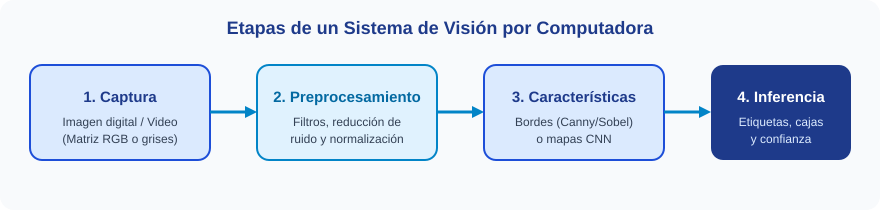
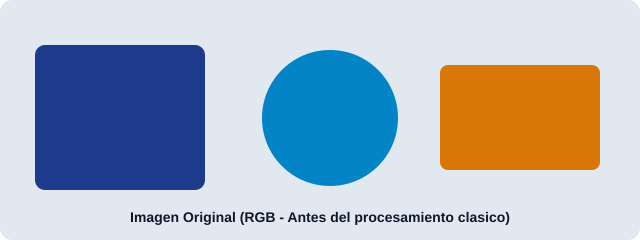

Portada e Introducción: ¿Qué es la Visión por Computadora?
La visión por computadora es una rama de la Inteligencia Artificial que permite a las computadoras interpretar y comprender información visual proveniente de imágenes o videos. En este e-book recorremos desde la estructura de la imagen digital y el procesamiento clásico hasta las redes neuronales convolucionales, las aplicaciones reales, la ética, la Realidad Aumentada (RA) y una demostración práctica de IA.

Unidad 1: Fundamentos de la Imagen Digital
Una imagen digital se organiza como una matriz de píxeles con una resolución determinada y se representa en distintos espacios de color, como RGB y escala de grises.
- Temas: Píxeles, resolución y espacios de color (RGB, escala de grises).
Recurso Interactivo (RA)
Simulador de canales de color y modelo de cámara (RA): Explora la composición RGB y conceptos espaciales en Realidad Aumentada con AR.js (marcador Hiro).
Abrir experiencia WebAR (AR.js)Unidad 2: Procesamiento Clásico de Imágenes
Analizamos técnicas clásicas para preparar y transformar imágenes antes del análisis avanzado o la inferencia.
- Temas: Filtros espaciales, detección de bordes y umbralización.
Recurso Interactivo
Comparador visual antes/después con OpenCV: Alterna entre la imagen original y los resultados generados con Python, OpenCV y Matplotlib.
Vista actual: Imagen original con ruido (sin procesar).

Unidad 3: Deep Learning y Visión por Computadora
Estudiamos modelos profundos capaces de aprender jerarquías de características para clasificar, detectar objetos y segmentar escenas.
- Temas: Redes Neuronales Convolucionales (CNN), detección de objetos (como YOLO) y segmentación.
Recurso Interactivo (RA)
Explorador de detección de objetos en escena (RA): Visualiza cómo se interpretan elementos y espacios visuales mediante RA y demostraciones aplicadas.
Abrir visor RA Ver predicciones y confianzaUnidad 4: Aplicaciones Reales y Ética
Revisamos aplicaciones prácticas y el análisis crítico de sesgos visuales en sistemas de visión por computadora.
- Temas: Casos de uso en medicina, vehículos autónomos e industria.
Actividad Final
Cuestionario interactivo y análisis de sesgos visuales: Reflexiona sobre limitaciones en datos, etiquetas y escenarios reales.
Herramientas y Caso Práctico de IA
El proyecto reúne herramientas de publicación, producción visual, Realidad Aumentada y una demostración práctica con asistente virtual de preguntas y respuestas:
- Publicación: GitBook, Book Creator o Quarto (desplegado aquí en GitHub Pages).
- Producción: Google Docs, Canva, Python con OpenCV y Matplotlib, Excalidraw / draw.io y Zotero (APA).
- Realidad Aumentada: AR.js (WebAR), Adobe Aero y Assemblr Studio.
- Caso práctico de IA: Demostración de detección/clasificación con etiquetas y niveles de confianza, más asistente de preguntas y respuestas.
Referencias Bibliográficas (Formato APA 7)
- Bradski, G., & Kaehler, A. (2008). Learning OpenCV: Computer vision with the OpenCV library. O'Reilly Media.
- Gonzalez, R. C., & Woods, R. E. (2018). Digital image processing (4th ed.). Pearson.
- Goodfellow, I., Bengio, Y., & Courville, A. (2016). Deep learning. MIT Press.
- Szeliski, R. (2022). Computer vision: Algorithms and applications (2nd ed.). Springer.